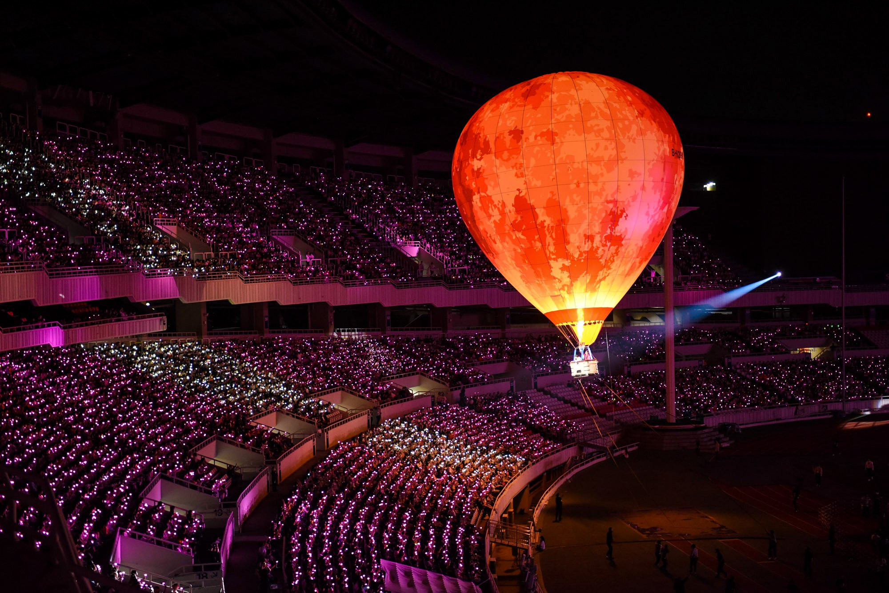

Get to Know Us

Jockey's Convention Center (JCC) has been an iconic landmark in Jakarta since it first opened its doors in 1974. The brainchild of Mr. Yayat Supriatna, JCC was established with the aim of providing a world-class venue for national and international events. From its earliest days, Jockey's Convention Center quickly established itself as a premier destination for conferences, exhibitions, and other large-scale gatherings. Over the years, JCC has hosted a wide range of high-profile events, from political summits and trade shows to concerts and sporting competitions, such as IU’s special concert in 2021.
One of the most significant events in Jockey's Convention Center's history took place in 1976, when the center played host to the 11th Non-Aligned Movement Conference. This gathering of 98 countries marked a major milestone in international diplomacy and was a testament to the center's growing reputation as a hub for global events. In 1992, Jockey's Convention Center underwent a major renovation, adding new facilities and amenities to better serve the needs of its clients. Today, the center boasts a range of state-of-the-art technology, including high-speed internet, video conferencing equipment, and advanced sound and lighting systems. Through a transformative renovation in 1992, Jockey's Convention Center elevated its offerings, equipping itself with cutting-edge technology and modern facilities, ensuring an exceptional experience for clients seeking state-of-the-art amenities.

Our Certification

Discover a place where high standards of quality align seamlessly with a genuine commitment to environmental sustainability